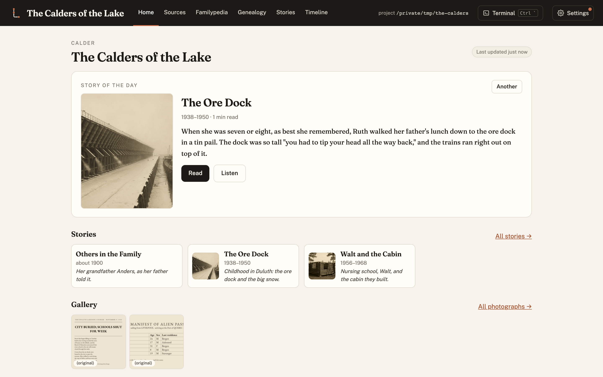

Quickstart
From nothing to a researched family record, with Claude Code doing the work and you approving every
step that leaves your computer. You need a Mac or Linux machine, Python 3.10+, git,
Typst (brew install typst), and a Claude
subscription with Claude Code.
1. Install Lineage and look at the demo
git clone https://github.com/rexsaurus/Lineage.git
cd Lineage
make install
make demo # the dashboard on an invented family, at http://127.0.0.1:8777

2. Start your family's lineage
make new PROJECT="$HOME/lineages/our-family" # its own folder and its own private git repo
cd "$HOME/lineages/our-family"
make dashboard # leave this running in one terminal
3. Load Lineage into Claude Code
In a second terminal, in the family's folder:
cd "$HOME/lineages/our-family"
claude
Then, inside Claude Code, install the Lineage skills:
/plugin marketplace add rexsaurus/Lineage
/plugin install lineage@lineage
The project already carries a CLAUDE.md and Lineage's rules, so Claude knows where everything
goes. Check it is working with:
Where are we? Summarise this lineage and tell me what to do first.
4. The research workflow, as prompts
Paste these one at a time, in order. Each names what to do and what not to do. Change the names and places in brackets.
Gather and archive what the family has
I've put photos, scans and documents in sources/. Catalogue every one: what it is, who and
what it shows, its date and where it came from. Don't rename or alter any original. Make
restored copies of damaged photos, keep the raw files, and mark anything generated as an
illustration.
Transcribe the recordings in sources/, label the speakers, and build the timeline from them.
Flag every date that is a guess and every place where two accounts disagree.
Fill in book.yaml and data/family_tree.csv from what you've found. Leave out living people
unless I say otherwise, and list what you're unsure of as questions for me.
Hunt down public records (a research swarm)
For each relative in the family tree, run parallel research agents to find publicly
available records: censuses, vital records, military service files, ship manifests, city
directories, yearbooks, newspapers, court and land records, and published books. Use only
open, public sources. Respect robots.txt, never log in to anything or get past a paywall,
and never download a borrowed (lending-library) book. Save each find with its URL, date
retrieved and a checksum, and write a research log per person.
Before you use any published book, check its copyright first: US public domain before 1930,
1930–63 only if the copyright wasn't renewed. Quote public-domain sources freely; paraphrase
anything in copyright with page numbers and keep quotations under 15 words. Keep private
research copies out of git and out of anything that syncs.
Write to archives and museums (drafts only)
From the research gaps, work out which archives, libraries, museums, historical societies
and courts would hold what we're missing. Find each one's current research-request address
from its own website. Write a short, specific request to each: who the person is, the
dates, what we already have, exactly what we hope they hold, and an offer to pay fees.
Save every email as a Gmail DRAFT and show me the list. Do not send anything until I say
"send it" for that email.
Every two hours, check my inbox for replies from those archives. For each new reply: save
attachments to the project (never to git), ingest the records into the right person's
research notes, log it in REQUESTS-SENT.md, and tell me in a line or two what arrived and
anything they ask for: fees, forms or questions. Report any bounced request with an
alternative address, as a draft. Never reply, pay or fill in a form without my go-ahead.
Turn it into a Familypedia and a book
Write a Familypedia article for every relative, and for the places, ships, companies and
regiments they're connected to. Every sentence needs a footnote to a recording or a
record. Keep family memory and documents side by side where they disagree. Use real
photographs only; never use an illustration as a person's portrait.
Write the chapter for [name], from the recordings and the records we've gathered. Keep
quotations exact, cite every paragraph, mark anything you'd like to add that isn't sourced
as a bridge for me to approve, and keep paragraphs under about 130 words. Then build it as
a PDF and show me.
Remove [the statement / the topic] about [relative] from the chapter, the Familypedia and
the timeline, and mark the interview passages it came from as private so they're never
published.
Publish and share
Build the book with the next version number, write the changelog entry, and publish the
read-only family website with each chapter downloadable. Hide sources and settings, keep
living people private, and run the privacy check before you deploy.
5. What you approve, always
Lineage and Claude never do these on their own:
- Send an email, pay a fee or submit a form.
- Publish anything, or upload a private research copy.
- Add a fact that no recording or record supports. It waits as a bridge for you to approve.
Next
- Getting started, the same journey explained for newcomers, with pictures.
- The how-to guide, everything in detail.
- The live demo, the dashboard in your browser, read-only.